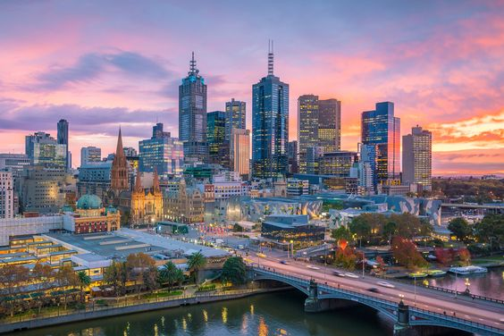
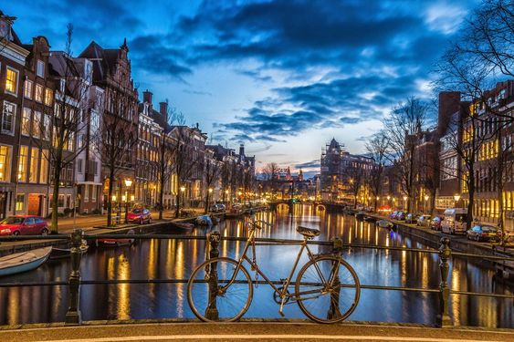
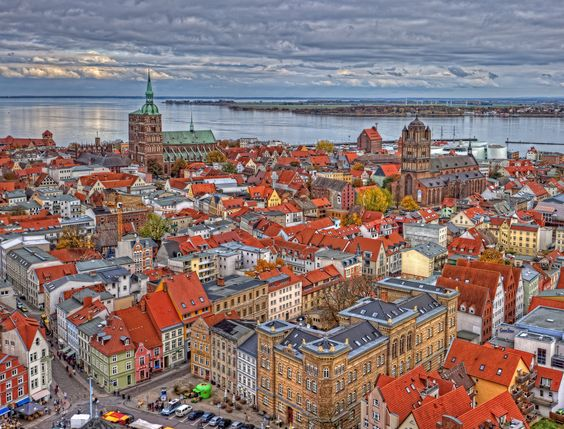

Document
CELE MAI DEZVOLTATE TARI DIN LUME
1.NORVEGIA
Pe primul loc in topul celor mai dezvoltate tari se situeaza Norvegia. Populatia sa de aproximativ 5 milioane de locuitori beneficiaza de standarde ridicate de educatie, de niveluri minime ale saraciei si ale somajului si de o speranta de viata de 80.2 ani.
2.AUSTRALIA

Australia este pe primul loc in privinta multor aspecte precum rata alfabetizarii, nivelul scazut al coruptiei, nivelul de trai ridicat, libertatea economica si drepturile omului. Australia are si unul dintre cele mai stabile scene politice ale lumii, acest lucru facand ca locuitorii ei sa fie unii dintre cei mai fericiti din lume. Trei orase australiene se afla in top 10 al oraselor cu cel mai ridicat nivel de trai din lume.
3.STATELE UNITE ALE AMERICII
Denumita de multe ori “Capitala Lumii”, SUA a dovedit asta din nou in 2008, cand criza economica americana s-a raspandit in toata lumea. S-a raportat ca speranta de viata a americanilor scade datorita obezitatii (unul din trei copii sufera de obezitate). Chiar si asa, SUA este una dintre cele mai dezvoltate tari ale lumii, are legaturi economice cu aproape fiecare tara si este punctul central al industriei automobilelor, industriei chimice, industriei alimentare si a bauturilor.
4.OLANDA

Olanda are a doua cea mai dezvoltata economie europeana. Se spune ca locuitorii Olandei sunt cei mai fericiti oameni din lume datorita impozitelor si taxelor mici, gradului mic de coruptie, standardelor ridicate de educatie si sistemului medical foarte dezvoltat. Fata de anul trecut Olanda a coborat o pozitie.
5.GERMANIA

Tara cu cea mai mare populatie din Europa (83 de milioane de locuitori) este pe locul 5 in lume si pe locul 3 in Europa ca grad de dezvoltare. Germania este cunoscuta pentru nivelul scazut al coruptiei si pentru companiile pe care le gazduieste: Volkswagen, Daimler, Siemens, BMW etc.
EXPLORATI HARTA
© MADE BY VALERIA CORONCIUC 2023